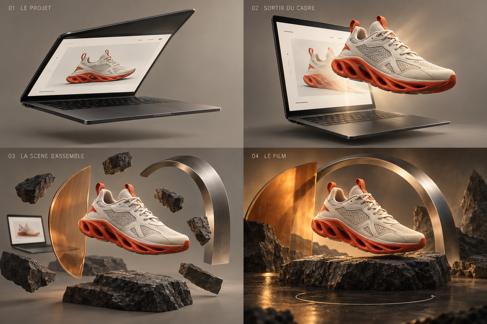

01 / LE POINT DE DÉPART
Un projet reconnaissable.
L’écran s’ouvre sur un site. Le visiteur comprend qu’il peut partir de ce qu’il possède déjà : un produit, une image ou une idée. L’ordinateur sert à raconter ce passage.
NOUVELLE PISTE · APRÈS TON RETOUR
Voilà une mise en scène plus proche de l’ambition exprimée : des objets indépendants, de la profondeur, une ouverture d’écran et un mouvement de caméra. La montre et son découpage en rectangles sont écartés de la direction proposée.
Après cet essai, la prochaine étape est une vraie page complète avec des images d’attente. Les effets seront travaillés aux emplacements retenus.

01 / LE POINT DE DÉPART
L’écran s’ouvre sur un site. Le visiteur comprend qu’il peut partir de ce qu’il possède déjà : un produit, une image ou une idée. L’ordinateur sert à raconter ce passage.
02 / LE PASSAGE
Le sujet se détache du fond, avance dans l’espace et devient le centre de la scène. Le cadre recule. Son contour, sa perspective et son ombre rendent le mouvement physique.
03 / LA CONSTRUCTION
Des éléments séparés arrivent de différentes profondeurs : support, décor, lumière. Ils trouvent leur place autour du sujet. En remontant, on retrouve les positions précédentes.
04 / LE RÉSULTAT
Un mouvement autour du sujet montre la scène terminée. Un tour complet à 360° est une variante à éprouver ; une rotation plus courte peut mieux servir le rythme. Le résultat vidéo et son modèle sont ensuite identifiables.
LE LIEN AVEC MAXVIDEOAI
La séquence montre la transformation visuelle. Le MCP apporte l’explication pratique : partager le contexte avec Codex ou Claude, préparer la création avec MaxVideoAI, valider le devis et obtenir le média. Le mouvement de la page est une mise en scène du site, pas la promesse que le MCP reconstruit automatiquement un objet ou son site en 3D.
La création directe reste accessible dès le début. Cette proposition est une séquence de la page ; elle ne remplace pas les preuves de modèles, les exemples ou les informations de prix.
L’essai animé est disponible, avec des volumes 3D et une vue à 390 px. Il permet de juger la chorégraphie. La suite se fera dans les pages complètes, avec des visuels d’attente adaptés, avant de produire les effets retenus.
Références : mise en scène produit chez Apple ; orchestration de caméra et d’objets dans ce tutoriel Codrops. Leurs assets et leur identité ne seront pas repris. Cette exploration ne valide ni palette, ni sujet, ni refonte complète.